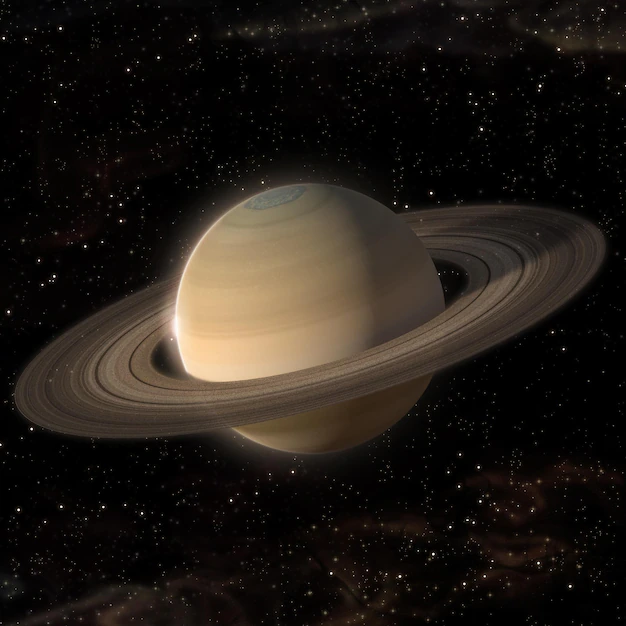
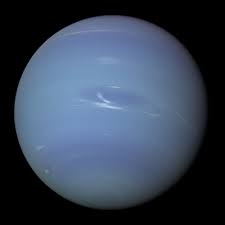

OUTER PLANETS
The outer planets are gas giants Jupiter and Saturn and ice giants Uranus and Neptune. Beyond Neptune, a newer class of smaller worlds called dwarf planets reign, including longtime favorite Pluto.
| PLANET | THUMBNAIL | DESCRIPTION |
|---|---|---|
| JUPITER |

|
The fifth planet from the sun. Jupiter is the biggest planet in the solar system. Jupiter is made up of gases. The big red spot on Jupiter is a giant storm. |
| SATURN |  | The sixth planet from the sun. Saturn has big rings around it. The rings are made of rock and ice. Three of Saturn's rings can be seen from Earth. |
| URANUS |

|
The seventh planet from the sun. Uranus is the only planet to spin round on its side. It would take you eight and a half years to reach Uranus in a space rocket. |
| NETUNE |  | The eighth planet from the sun. Neptune has four rings and eleven moons around it. Space rocket can't land on Neptune because Neptune is made of gas. |